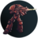
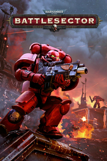

Warhammer 40,000: Battlesector |
|
| Tiempo de juego | No Jugado |
| Última actividad | Nunca |
| Añadido | 29/10/2025 22:16:08 |
| Modificado | 29/10/2025 22:16:34 |
| Estado de finalización | Not Played |
| Librería | Playnite |
| Fuente | 2TB GAS |
| Plataforma | PC (Windows) |
| Fecha de lanzamiento | 22/07/2021 |
| Puntuación de la Comunidad | 85 |
| Puntuación de la Crítica | |
| Puntuación de usuario | |
| Género | Estrategia |
| Desarrollador | Slitherine Ltd. |
| Editor | Slitherine Ltd. |
| Característica | Cloud Saves Compat. Parcial Con Mando Jcj Jcj A Pantalla (Com)Partida Jcj En Línea Logros De Multijugador Pantalla Partida/Compartida Préstamo Familiar Remote Play Together Un Jugador |
| Enlaces | Punto de encuentro Discusiones Guías Noticias Página de la tienda PCGamingWiki Logros |
| Tag | 3D Bélicos Ciencia ficción Combate Combate por turnos Espacio Estrategia Estrategia por turnos Games Workshop Isométricos JcJ Multijugador Multijugador asíncrono Por turnos Tácticas por turnos Tácticos Un jugador Valor continuo Violentos Warhammer 40K |